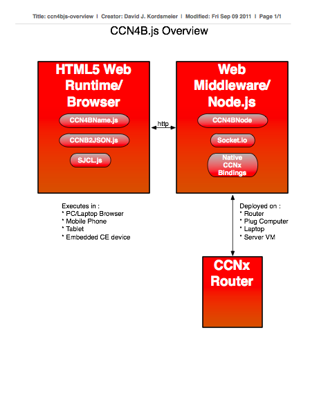

CCN4B.js - a Javascript framework for CCNx Protocol.
The CCN4B.js project is an open source project which is a proof of concept. Short for Content Centric Networking for Browsers, CCN4B is a small CCNx client API written in Javascript (JS), that utilizes the evented model of JS development. APIs are written to be asynchronous. Web application developers can choose to deploy this API in the client side of the web application (in script tag), or on the server-side of the web application, as a module import for a Server-Side Javascript platform called Node.js.
The CCN4B.js project is a collection of Javascript libraries and services that support communication and development using the CCNx Protocol. It constitutes a mix of Client-Side Javascript Libraries and Server-Side Middleware. Javascript will be used directly to generate CCNx packets, and will attempt to take a minimalist approach in API surface. Initial investigation will look at whether the best approach is to wrap the native C library or to use pure JS to generate CCNx packets. Other work will include development of a CCN Admin Console to allow monitoring and management of a CCN router.

This project was started in August of 2011 in response to an effort to help solve a problem with getting broadband and data services deployed in the developing world. CCNx offers an interesting set of attributes which may support various use cases for deployment in adverse conditions, such as intermittent power, poor quality of internet connectivity, lack of connectivity, and lack of general Internet infrastructure.
Since 2007, with the advent of the iPhone/iPod Ecosystem, the importance of the Web Runtime has grown in leaps and bounds. With the rise and fall of proprietary development platforms, and with the continued issues with IPR around technologies like Android, the Web is the only platform that is future proof and cannot be erase, held under injunction, sued, or turned off.
The BOM cost of a complete Wifi enabled device with a screen is on a downward curve, with power and capability increasing as cost declines over time. This is a challenge for profits of large semiconductor companies, but presents a great opportunity for underdeveloped countries to leap ahead in technology deployment and utilization. The Web is the lowest common denominator for app development and deployment on these low cost devices (after SMS).
Discuss the Javascript with code samples - TODO
Discuss testing and verification of the code - TODO
This is a big todo item. Currently exploring various JS documentation options
The CCN Admin demo shows simple management of a CCNx router..
Just like you used to do with PHPMyAdmin, you can use this to manage your CCNx services (start/stop/restart) + configuration.
Input any URL and pull in content. Get your local copy of the Internet
Content can be shared and split across many Micro-Cloud nodes.